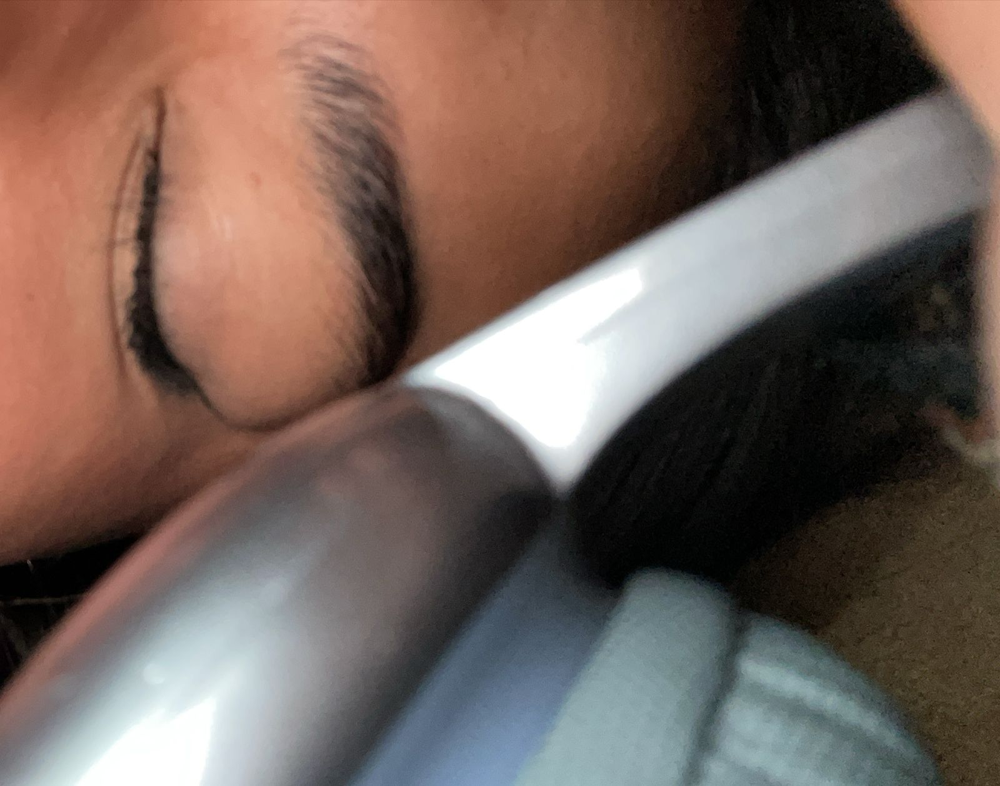

Mi amor: Esta semana fue tranquila… y sin embargo, me hizo darme cuenta de algo inmenso: contigo, hasta lo cotidiano se vuelve extraordinario. No hicimos grandes cosas ni viajamos lejos. Pero cada mensaje tuyo, cada risa por algo tonto, cada sticker o audio que compartimos… fue como una luz encendiéndose en mi corazón. Me gustó cómo me pedías que descansara, aunque tú tampoco lo hicieras. Me hizo sentir importante. Me encantó que me compartieras tus dudas con el outfit, tus ideas, tus inseguridades bonitas. Me diste la oportunidad de admirarte en cada detalle. Y cuando me decías “ya desayunaste?”, parecía una pregunta común… pero no lo era. Era cariño disfrazado de rutina. Empezamos a conocernos en esas pequeñas cosas. Y yo, sin darme cuenta, ya empezaba a quererte no solo por lo que hacías… sino por cómo me hacías sentir. Esta semana entendí que la ternura también puede ser revolucionaria. Y tú, Anahí, eres la ternura más linda que me ha tocado vivir. Nos acompañamos en lo cotidiano: tareas, comidas, descansos y desvelos. Pero lo más increíble es cómo, entre todo eso, convertímos los momentos simples en algo hermoso. Había palabras de aliento, preguntas dulces como “¿ya desayunaste?”, y risas que curaban cualquier cansancio mi vida. En esta semana, la relación comenzó a descubrir la magia de lo cotidiano. Los días no se diferenciaban mucho entre sí, pero cada uno tenía su propio matiz especial. Entre tareas diarias, descansos compartidos, y las comidas, se tejían momentos de intimidad y conexión profunda. Había algo único en los pequeños gestos: una palabra de aliento, un “¿ya desayunaste?” en la madrugada, o una risa en medio de la rutina que transformaba todo en algo hermoso. Las preocupaciones del día a día parecían desvanecerse al estar juntos, y lo que antes era rutina se convertía en poesía. La frase especial refleja esa capacidad de ver lo maravilloso en lo más sencillo: “Hasta con pijama, para mí, luces espectacular.” Porque el amor no depende del escenario, ni de los adornos. Simplemente se trata de estar allí, en el día a día, haciendo del momento algo digno de recordar.
Momentos que derriten:
“Hasta con pijama, para mí, luces espectacular.”
Momentos que irritan:
Te sentiste malita
